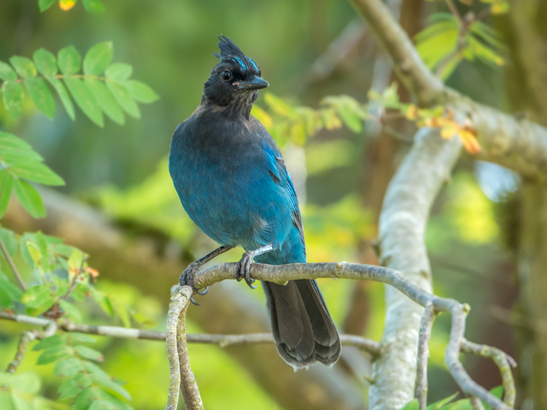
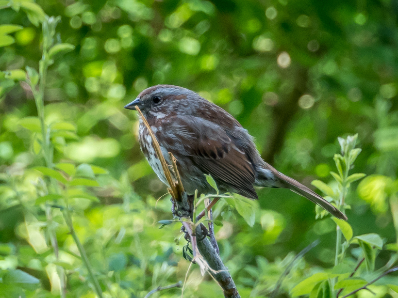
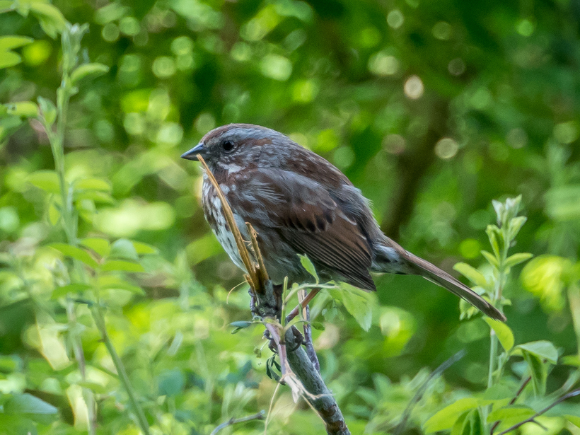
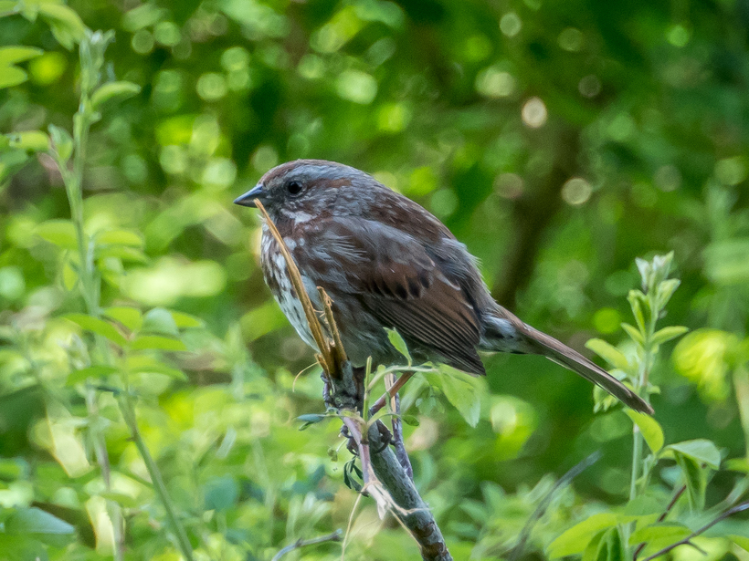

I feed birds sunflower seeds. Some birds hide food to retrieve and eat at a later time. This behavior is called “caching” and it helps birds survive during bad weather and when food sources are low. The blue bird called Steller jay seems to swallow many shelled sunflower seeds. I'm curious if it spit them or not to store somewhere.



 

